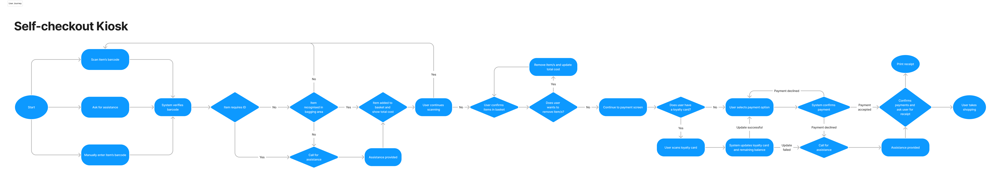

Business Research
In an increasingly digitised world, the user experience (UX) at self-checkout kiosks in supermarkets plays a critical role in customer satisfaction and operational efficiency. As technology evolves and user expectations change, it is essential to continually improve the design of these kiosks.
Problem Statement:
The current self-checkout kiosk design may not fully align with evolving user preferences, leading to occasional usability issues, user frustration, and potential loss of business. I aimed to address these concerns by proposing a new design.
User Journey
This flowchart highlights the pivotal steps in the user journey when engaging with a self-checkout system.
I designed this flowchart to illustrate the initial user interface, offering three interaction pathways:
- Scan item's barcode
- Manually enter barcode
- Ask for assistance
These choices initiate a series of user interactions aimed at barcode verification and product validation. The system subsequently assesses whether the item has been successfully placed in the bagging area before incorporating it into the user's basket and recalculating the total basket value.
Proposed Design
Here are static prototypes showcasing the initial design state, depicting screens with zero items in the cart and a total cost of £0.


Behind this static representation, the design incorporates dynamic variables and conditionals that dynamically update the cart totals, as demonstrated in pictures 6, 7, and 8, triggered by user interactions.
Additionally, a conditional feature is implemented that automatically adds the selected product to both shopping baskets, as seen in pictures 7 and 8, when the item quantity is increased, while simultaneously removing the "No item in your basket" placeholder.